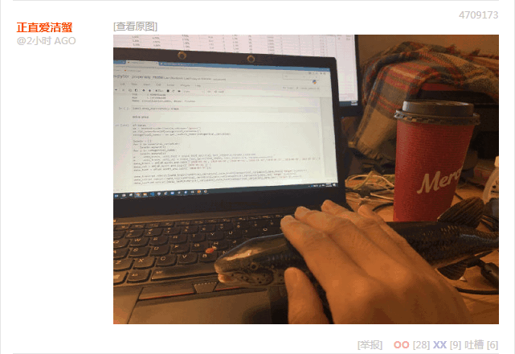

2020-10-05 07:00
洗完澡了精神抖擞容光焕发，上网乱转发现九省通衢の煎蛋出现了一条武德甚为充沛的重要情报：
简单说，有条旧闻，说海湾战争之后美帝灯塔国禁止索尼向伊拉克出口PlayStation，理由是其中芯片可以用于军事用途，那时候微软还没有叉箱，而费拉不堪的任天堂不堆硬件成天叫嚣「游戏性」被大批索尼大法好弟子嘲笑。
与此同时，国际一流和谐宜居之都「高学历精英社交圈」正在首页今日头条位置醒目应景推荐了一条武德较为充沛的重要情报：
「资本家会把绞索卖给即将绞死他们的人」有哪些实际的例子？在举头三尺有棱镜的人工智障算法①看来，捅妓上的相关性已经是常凯申头上的虱子，明摆着了的。
即便是娱乐至死の逗哔都在抱怨现在的各种划时代游戏大作，动辄强调光线追踪了帧数了模型细节了，可玩性远不如十年前那些。
也就是说，不惮以最大的恶意揣测，包括但不限于英伟达在内的硬件厂商伙同微软索尼，以娱乐至死的口号扮演阴阳人两面派，对汇丰银行大股东宣称这是输出精神鸦片赚大钱，对流氓国家则宣称这是忍辱负重曲线救国向你们输出先进硬件祝武运昌隆。
2020-10-05 08:40
吃饱了撑着回来了，上网乱转发现国际一流和谐宜居之都「高学历精英社交圈」正在首页今日头条位置醒目应景推荐了一条关于「新时代墨家」或曰「走毕达哥拉斯路线的当权派」的重要情报：
投稿到arxiv的文章上面占坑被抄袭怎么办？运用大手搜索引擎查询关键字，大海捞针之后，发现美国国立卫生院早在1961年就创立了一个「论文预印本交流项目」IEG，然后面临了各种情报掮客把持的宣传阵地的多方压力，并在1966年末宣布关闭。
不惮以最大的恶意揣测，之前爆料声称「兲朝1969年以来最大丑闻」的有组织有纪律的学术剥削行动，应该以生物化学和医药领域为主，就是2003年非典和这次新时代王冠的制造者所策划的「用你的骨头熬你的汤」「请君入瓮」计划。
简单说，在闭关锁国内卷化时期通过各种虚无缥缈的名词诈骗高学历傻哔自带干粮卖命干惊天动地事做隐姓埋名人，包括但不限于党国高音喇叭反复炒作的各种重大突破当中普遍存在的「不惜用自己做人体实验」的关键步骤，成功了也活不了多久，死掉就在骨灰盒上盖一块画着镰刀榔头的抹布即可。而在改革春风吹满地之后就通过漂洋过海投奔百善の新世界为诱饵「钓鱼」「捞饺子」诈骗高学历傻哔自带干粮卖命干惊天动地事做隐姓埋名人，包括但不限于开设大批合资实验室搜集兲朝土著基因情报研究定向基因武器。
从SAAS到MERS再到新时代王冠，技术已经成熟，可以发动「腾笼换鸟」三大战役了。先是海湾王冠碎一地，尤其是沙特，再是东南亚王冠碎一地，尤其是暹罗柬埔寨，最后是特大日本帝国王冠碎一地，连带泛通古斯贵族院解散，百善の新时代王冠这才算稳稳的戴在谁头上。
但是万恶的旧社会王冠不甘心退出历史舞台，比方说现在，土耳其惦记着领导三洲通衢傻哔绿人不管用，必须证明有这个能力取而代之，基督教亚美尼亚就是选定的软柿子，捏完了之后再炒作「MOGA
」一阵子，沙特所罗门国王就可以含笑九泉了也。
顺便，白金汉宫老佛爷一直都是「不甘心退位让贤」的态度吧？旧的不去，新的不来，这道理谁都知道，何况七十年太子乎？
剩下都是情报掮客复读机斗嘴了：我就不去，就不去就不去，就不让你来，不让你来不让你来……
2020-10-06 04:30
刚爬起来酒劲还在头昏脑胀，上网乱转发现「匿名岛夷」之上出现了一条色目含量甚低的重要情报：
马克龙在扬言要派出前往新疆得人权调查团后宣布要在法国推行《反msl分裂主义法案》
马克龙版本的《反分裂法》草案中包括
- 禁止msl儿童在家学习古兰经，防止msl家庭儿童接受未经审查的宗教教育。
- 政府可以解散msl社团
- 可能会禁止msl在公共场合带面纱和头套，
马克龙说
“我们在我们自己的土地上创造了分裂主义者。我们将这些同宗同源的人集中在了一起，这创造了我们对这些群体‘经济和教育上的困难’”。
马克龙强调
“教育是一切的关键，明年九月开始3岁以上的msl家庭儿童将被强制要求前往受政府核准的学校上学，而不能在家接受教育。”
说个题外话，这个虽然在法国引起了一些争议，但在德国民众中似乎获得了压倒性地支持。
(・∀・)双标得不能再彻底了
感情是为了不要让别的国家看出来，他是学中国的，才反对其他国家去调查吗？(´ﾟДﾟ`)
马克龙称可能在明年初正式提交该法案
之前肥哥说了
现在的肉已经不够吃了，甚至没有把汤分给其他的人的余韵，这时候左派那种虚伪的仁慈都没用了
这种情况下，右派，民族主义肯定会复兴…
那些德国人也好，法国人也好，与其说是双标不如说他们都讨厌
他们嘴上说的更像是优越感
或许是打着调查团旗号的考察团
白左根本不关心别人死活 只想找个“少数群体”研究研究然后发表一篇人类学论文罢了(￣艸￣)
他们只希望其他种族保持弱小落后的状态，方便他们奴役掠夺
为此需要一个好听的名头罢了
这是要去新疆取经吗
看来「亚琛共识」已经达成，这个圣啊，还是先不渎了吧。只不过这种话德国不能说，得靠法国代言。
与此同时，屎绿配色的国际化大都市「华语第一精日论坛」出现了一条色目含量甚高的重要情报：
一个乞丐日夜提防亿万富翁来他家里偷东西，这合理吗？不错，长进了，这帮马瓦力终于承认一屁股坐在油井上不挪窝儿的色目主子不远万里从三洲通衢偷渡入境是为了偷东西了。不像以前那么嚣张了，「抄你是看得起你」「你说论文是你写的，你叫它一声，它答应么」「你为什么要在我的论文上签上你的名字呢」「你有身份证么」「既然你这人都不存在，那这论文就是我的了」……最终结论：嗤，全中国十四亿人全世界十四万四千人，每人一口唾沫也能把你这反汉贱种中国通卡菲勒淹死。
2020-10-06 09:00
吃饱了撑着回来了，上网乱转发现国际一流和谐宜居之都「高学历精英社交圈」正在首页今日头条位置醒目应景推荐了一条战略意义甚为充沛的重要情报：
英法双语无缝融合的最高境界刚好可以作为《知乎问答№012》当中引述业内结论「各方面都差不多的两个人群的语言的融合有个平衡点，50%」的素材，虽然业内本身是英人研究纸猫土著得出的结论，但是现在看来似乎可以「以彼之道还施彼身」了也。
也就是说，眼瞅着「英法联邦」计划再开，南不列颠及北爱尔兰千年搅屎棍又要搞「离岸平衡」了也。这种「双语环境」与本篇题外话关注重点「蒙特利尔の大手情报机构职员以人肉智能伪装成人工智障」存在着捅妓上的相关性。
未完待续
- ① 伪装成人工智障的人肉智能
